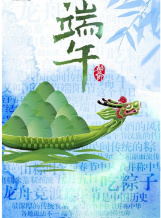

端午节的由来
端午节为每年农历五月初五，又称端阳节、午日节、五月节等。“端午节”为中国国家法定节假日之一，并已被列入世界非物质文化遗产名录。端午节起源于中国，最初是中国人民祛病防疫的节日，吴越之地春秋之前有在农历五月初五以龙舟竞渡形式举行部落图腾祭祀的习俗；后因诗人屈原在这一天死去，便成了中国人民纪念屈原的传统节日；部分地区也有纪念伍子胥、曹娥等说法。
端午节的习俗
端午节的习俗有吃粽子，赛龙舟，挂艾草，挂香包等等。端午节在门口挂艾草、菖蒲（蒲剑）或石榴、胡蒜，都有其它原因。通常将 挂艾草、菖蒲、榕枝艾、榕、菖蒲用红纸绑成一束，然后插或悬在门上。戴香包颇有讲究。老年人为了防病健身，一般喜欢戴梅花、菊花、桃子、苹果、荷花、娃娃骑鱼、娃娃抱公鸡、双莲并蒂等形状的，象征着鸟语花香，万事如意，夫妻恩爱，家庭和睦。小孩喜欢的是飞禽走兽类的，如虎、豹子；猴子上竿、斗鸡赶兔等。